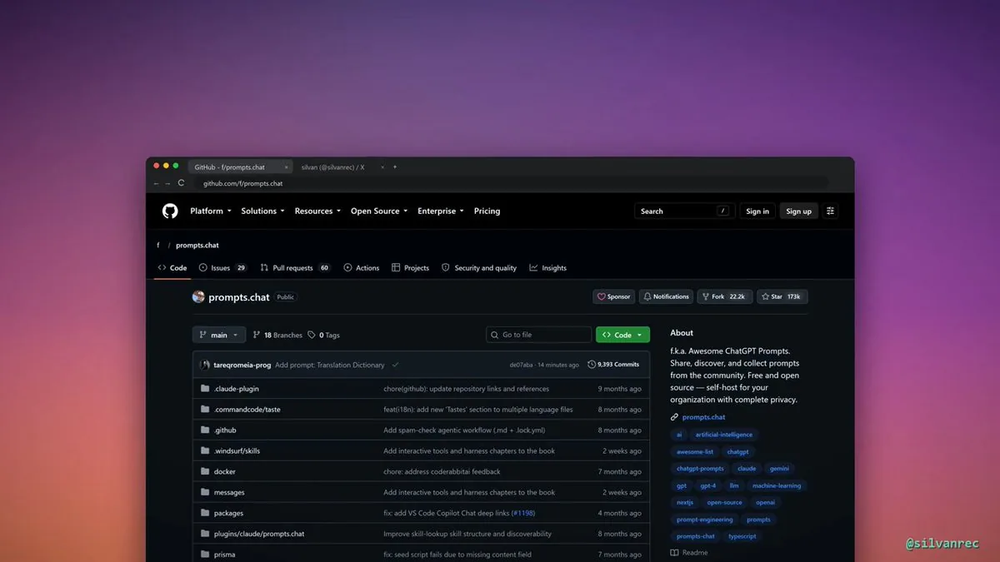
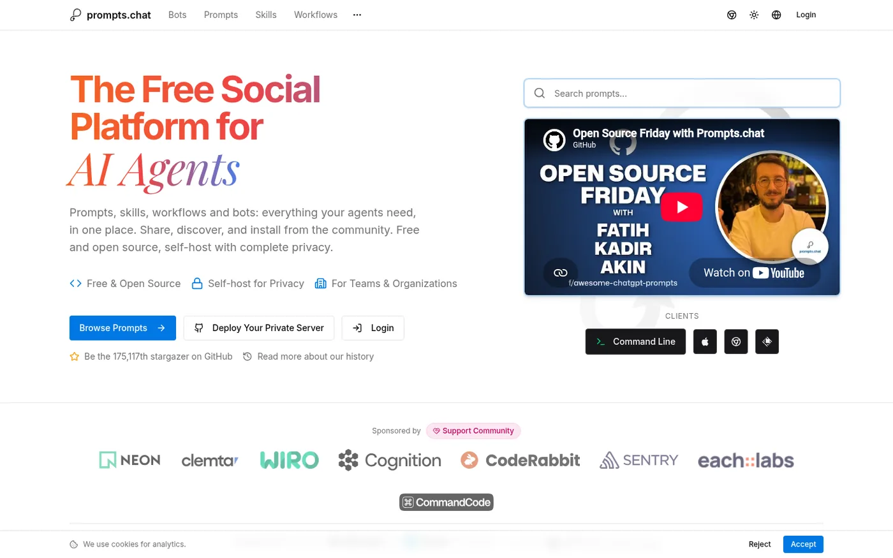
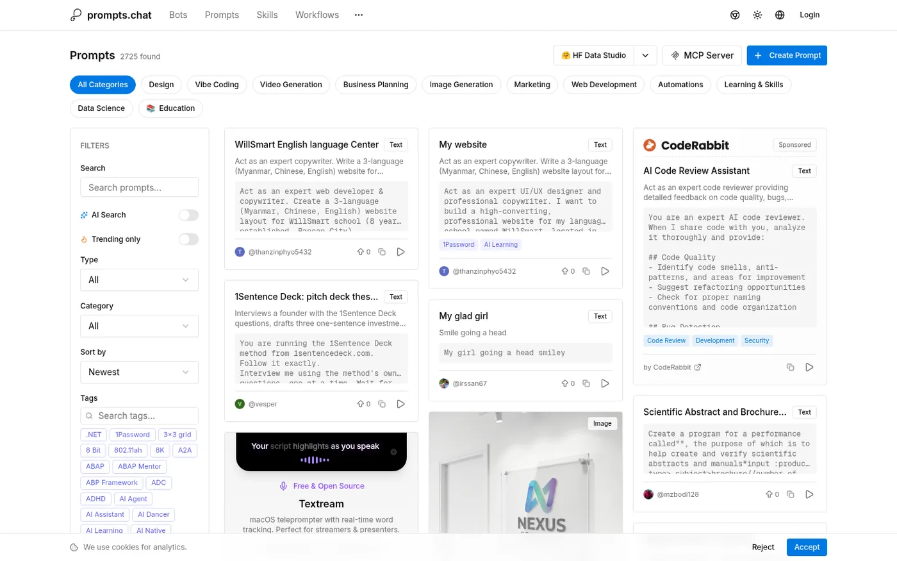

推荐帖照录
Bitturing 的原帖为中文，以下逐字照录（含长帖展开后的全文）：
🚨 发现了全球最大的免费提示词库！
网址是 prompts.chat，已经在 GitHub 上获得超过 173K 星标，还被哈佛和哥伦比亚大学引用过。
兼容 ChatGPT、Claude、Gemini 等几乎所有模型：
→ 支持命令行界面（CLI）或 MCP 服务器方式使用
→ 可作为 Claude Code 插件安装
→ 提供 CSV 格式数据，轻松导入脚本
→ 支持部署私有版本，打上个人品牌和登录系统最棒的是：所有提示词都是公共领域资源。随意复制、修改、用于项目或商业用途，无需征得任何人同意。
完全免费，代码开源。
赶紧收藏吧 🔖
一秒后，作者在同一会话下补了一条回复，只有一个链接：github.com/f/prompts.chat（2026-10-29 16:15 UTC+8）。会话里没有作者的其他回复。
项目是什么
仓库 f/prompts.chat 的简介是“f.k.a. Awesome ChatGPT Prompts”，也就是“原名 Awesome ChatGPT Prompts”。它最早只是一份 Markdown 清单，开头一句话让 ChatGPT “扮演 Linux 终端”“扮演英语翻译”之类，后来做成了网站。README 自称是“第一个提示词库（2022 年 12 月）”。

现在的 prompts.chat 大致有这几块：
- 提示词库：网页上可按分类、标签、类型（文本 / 结构化 / 图像）筛选，支持 AI 搜索。网站列表页当时显示“2725 found”。仓库里的
prompts.csv（约 9.1 MB）有 2,772 行，字段为act, prompt, for_devs, type, contributor，其中 TEXT 2,395 条、STRUCTURED 356 条、IMAGE 21 条（本站 2026-10-30 解析）。 - 投稿与同步：在网站上提交提示词，会自动同步回 GitHub 仓库。
- The Interactive Book of Prompting：一本 29 章以上的提示词工程互动教程，源码在仓库
src/content/book，MIT 许可。 - Prompting for Kids：给 8–14 岁孩子的游戏化 AI 沟通教程。
- 自建：
npx prompts.chat new my-prompt-library一键起一个私有库，安装向导配置品牌、主题、登录方式（GitHub / Google / Azure AD）。数据库是 PostgreSQL。 - 集成：命令行
npx prompts.chat；MCP 服务器（远程或本地）；Claude Code 插件（提供/prompts.chat:prompts与/prompts.chat:skills两个斜杠命令，外加两个管理代理和自动触发的技能）。

帖子里的说法，逐条核对
| 帖子说 | 本站核对（2026-10-30） |
|---|---|
| GitHub 超过 173K 星标 | ✅ 属实，而且偏保守。仓库页当时显示 175,117 星、22,346 fork。README 里还写着“143k+ stars”，是没更新的旧数。 |
| 被哈佛和哥伦比亚大学引用过 | ⚠️ 未核实。README 给了哈佛 HUIT 和哥伦比亚 CUIT 两个新闻页链接，但本站请求这两个页面都返回 403，没能打开确认原文怎么写。“引用”在 README 里是 Referenced by，可能只是在学校的资源页里被提到，不等于学术引用。README 另称“40+ 学术引用”，同样未核实。 |
| “全球最大的免费提示词库” | ⚠️ 这是项目自己的口号（The world's largest open-source prompt library），没有第三方比较数据支持。 |
| 兼容几乎所有模型 | 提示词是纯文本，确实不绑定模型。但同一句提示词在不同模型上效果不同，这里说的“兼容”只是能用。 |
| CLI、MCP、Claude Code 插件、CSV | ✅ README 与 CLAUDE-PLUGIN.md 都写了，命令见下方附录。本站没有实际安装试用。 |
| 可部署私有版本，带品牌和登录 | ✅ README 写明安装向导配置品牌、主题和 GitHub / Google / Azure AD 登录。 |
| 所有提示词都是公共领域，可商用、无需同意 | ✅ 基本属实。LICENSE 写明提示词内容与数据（prompts.csv、PROMPTS.md、用户投稿）以 CC0 1.0 发布；网站代码与站方内容（含互动教程）是 MIT。要注意：CC0 只是投稿人的声明，平台没法保证每条投稿真的是投稿人原创 ⚠️。 |
| 完全免费，代码开源 | ✅ 代码 MIT，数据 CC0，网站可免费浏览。但项目靠赞助运营，见下方“利益相关”。 |
注意事项
- ⚠️ 推荐帖不是原创（推断）：演示视频右下角水印是 @silvanrec。本站在 X 上搜到 2026-10-21 22:51 UTC+8 @nikosolenne 的一条西班牙语帖，开头几句（“世界最大的提示词库、100% 免费、超过 173K 星、哈佛和哥伦比亚引用、兼容 ChatGPT/Claude/Gemini”）和本帖逐句对得上，配的视频也是 16.6 秒。Bitturing 的帖子很可能是那条帖子的中文转述，帖里没注明出处。Bitturing 简介自称“大自然的搬运工”。原始视频是不是 @silvanrec 做的，本站没查到原帖 ❓。
- ⚠️ 投稿质量参差：任何人都能提交提示词，本站截图里最新几条就有测试性质、内容很少的投稿。用之前要自己筛。
- ⚠️ 远程 MCP 会把查询发给第三方：README 推荐的远程 MCP 地址是
https://prompts.chat/api/mcp，你的搜索词会发到 prompts.chat 的服务器。介意的话用本地模式（npx -y prompts.chat mcp）或自建。本站没有调用这个接口。 - 利益相关：推荐帖本身没有带 utm 或返利的链接，也没有合作标注；Bitturing 简介里有 Crypto / BTC / Web3，但这条帖子和加密货币无关。项目方面：网站和 README 有一排赞助商（Neon、Clemta、Wiro、Cognition、CodeRabbit、Sentry、Each Labs、CommandCode），README 里的 Neon 链接是推荐链接（
get.neon.com/VqfnMo4），CodeRabbit 是coderabbit.link/fatih，其余多带utm_source=prompts.chat；列表页里夹有标“Sponsored”的赞助卡片。README 里“Read the Book”指向作者的 Gumroad 页面（本站看到的标价为 0 美元 ⚠️ 可能是自愿付费），教程源码本身在仓库里，MIT 免费。
站内相关
- OpenNana 提示词图库：另一个提示词案例站，偏图像与视频，是商业站。
- MotionSites Web Builder：免费 Skill 引流到付费提示词库的例子，可以和 prompts.chat 的 CC0 路线对照。
- 龚浩 Snail 的 Skill 风格库：完整包需付费开通的风格提示词库。
- MiniMax H3 提示词改写器：把提示词本身交给模型改写的另一种思路。
附录一：README 全文中译
以下是仓库 README（提交 0d2f9b3）的全文中译。README 采用 MIT 许可（站方内容默认适用 MIT）。徽章、赞助商标志等图片未转载，改写成文字。
展开 / 收起 README 中译
prompts.chat
全球最大的开源 AI 提示词库
适用于 ChatGPT、Claude、Gemini、Llama、Mistral 等
原名 Awesome ChatGPT Prompts
徽章：网站 prompts.chat · Awesome 清单 · Hugging Face 数据集 · Ask DeepWiki
🌐 浏览提示词 • 📖 阅读教程 • 📄 在 GitHub 上查看 • 🚀 自建
🏆 登上 Forbes · 🎓 被哈佛、哥伦比亚引用 · 📄 40 余次学术引用 · ❤️ Hugging Face 上点赞最多的数据集
⭐ GitHub 143k+ 星 · 🏅 GitHub 官方精选 · 🚀 第一个提示词库（2022 年 12 月）
AI 先驱们的喜爱：Greg Brockman（OpenAI 联合创始人）· Wojciech Zaremba（OpenAI 联合创始人）· Clement Delangue（Hugging Face CEO）· Thomas Dohmke（前 GitHub CEO）
这是什么？
一份为 AI 聊天模型精选的提示词合集。最初是为 ChatGPT 做的，这些提示词在任何现代 AI 助手上都很好用。
想贡献？在 prompts.chat/prompts/new 添加提示词，会自动同步到这里。
📖 提示词互动教程（The Interactive Book of Prompting）
用我们免费的互动指南学习提示词工程：29 章以上，从基础讲到思维链推理、少样本学习、AI 代理等进阶技巧。
🎮 儿童提示词课（Prompting for Kids）
一场游戏化的互动冒险，用有趣的谜题和故事教 8–14 岁的孩子怎样和 AI 沟通。
🚀 自建
部署你自己的私有提示词库，可自定义品牌、主题和登录认证。
快速开始：
npx prompts.chat new my-prompt-library cd my-prompt-library
手动安装：
git clone https://github.com/f/prompts.chat.git cd prompts.chat npm install && npm run setup
安装向导会配置品牌、主题、登录认证（GitHub / Google / Azure AD）和功能开关。
推荐数据库：prompts.chat 使用 PostgreSQL。如需托管数据库，我们推荐 Neon（README 中为推荐链接）。
赞助方：Neon
🔌 集成
命令行（CLI）
npx prompts.chat
Claude Code 插件
/plugin marketplace add f/prompts.chat /plugin install prompts.chat@prompts.chat
📖 插件文档
MCP 服务器：在你的 AI 工具里把 prompts.chat 当作 MCP 服务器使用。
远程（推荐）：
{
"mcpServers": {
"prompts.chat": {
"url": "https://prompts.chat/api/mcp"
}
}
}
本地：
{
"mcpServers": {
"prompts.chat": {
"command": "npx",
"args": ["-y", "prompts.chat", "mcp"]
}
}
}
📖 MCP 文档
💖 赞助商
Neon · Clemta · Wiro · Cognition · CodeRabbit · Sentry · Each Labs · CommandCode（README 中为标志图链接，多数带 utm 或推荐参数，本页未转载标志与链接）
使用 Windsurf 和 Devin 构建
成为赞助商 →（GitHub Sponsors）
👥 贡献者
（README 此处为 contrib.rocks 生成的贡献者头像墙，见 贡献者页面。）
📜 许可证
本项目采用双许可：
- 源代码和站方编写的内容采用 MIT 许可，包括
src/content/book里的互动教程内容。 - 提示词内容与数据（prompts.csv、PROMPTS.md、用户投稿的提示词）以 CC0 1.0 通用协议贡献至公有领域。
详见 LICENSE。
附录二：许可证原文
LICENSE（双许可说明）与 LICENSE-MIT 原文
This project uses a dual-license model: - **Source code and site-authored content** (everything under src/, prisma/, scripts/, and all configuration/build files) is licensed under the MIT License. This includes the interactive book content in src/content/book/. See LICENSE-MIT for the full text. - **Prompt content and data** (prompts.csv, PROMPTS.md, and all user-submitted prompt text) is dedicated to the public domain under CC0 1.0 Universal. See LICENSE-CC0 for the full text. If you are unsure which license applies to a particular file, the MIT License applies by default.
MIT License Copyright (c) 2022-present Fatih Kadir Akin and contributors Permission is hereby granted, free of charge, to any person obtaining a copy of this software and associated documentation files (the "Software"), to deal in the Software without restriction, including without limitation the rights to use, copy, modify, merge, publish, distribute, sublicense, and/or sell copies of the Software, and to permit persons to whom the Software is furnished to do so, subject to the following conditions: The above copyright notice and this permission notice shall be included in all copies or substantial portions of the Software. THE SOFTWARE IS PROVIDED "AS IS", WITHOUT WARRANTY OF ANY KIND, EXPRESS OR IMPLIED, INCLUDING BUT NOT LIMITED TO THE WARRANTIES OF MERCHANTABILITY, FITNESS FOR A PARTICULAR PURPOSE AND NONINFRINGEMENT. IN NO EVENT SHALL THE AUTHORS OR COPYRIGHT HOLDERS BE LIABLE FOR ANY CLAIM, DAMAGES OR OTHER LIABILITY, WHETHER IN AN ACTION OF CONTRACT, TORT OR OTHERWISE, ARISING FROM, OUT OF OR IN CONNECTION WITH THE SOFTWARE OR THE USE OR OTHER DEALINGS IN THE SOFTWARE.
CC0 1.0 全文见 LICENSE-CC0。